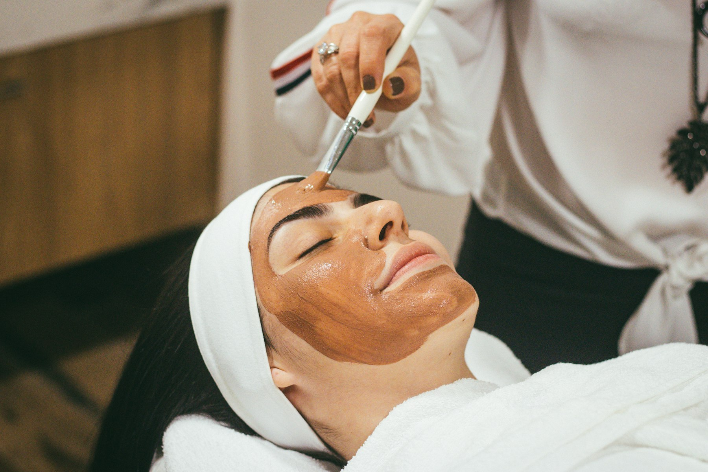

Behandlung
Gesichtsbehandlungen
Individuell abgestimmte Pflege für strahlende, gesunde Haut — von der Tiefenreinigung bis zur intensiven Feuchtigkeitskur, mit Produkten von Klapp Cosmetics.

Was ist das?
Pflege, die zu Ihrer Haut passt
Keine Haut gleicht der anderen — deshalb beginnt jede Gesichtsbehandlung bei uns mit einer kurzen Hautanalyse. Erst danach entscheiden wir gemeinsam, welche Reinigung, welches Peeling und welche Wirkstoffe Ihre Haut aktuell wirklich braucht.
Ob mehr Feuchtigkeit und Glow, eine klärende Behandlung bei Unreinheiten oder eine beruhigende Pflege für empfindliche Haut: Wir arbeiten ausschließlich mit hochwertigen Produkten von Klapp Cosmetics und passen jede Behandlung individuell an.
Beliebte Behandlungen & Preise
Ein Überblick
Zusätzlich bieten wir spezialisierte Behandlungen wie Aqua- & Microdermabrasion, Soft-/Micro Needling und Fruchtsäurebehandlungen an — alle Details dazu gerne im persönlichen Beratungsgespräch. Alle Preise laut aktueller Online-Buchung, Stand der Erhebung — bitte im Zweifel telefonisch bestätigen lassen.
Ablauf
So läuft Ihre Behandlung ab
-
Beratung & Hautanalyse
Wir schauen gemeinsam auf Ihren aktuellen Hautzustand und Ihr Ziel für die Behandlung.
-
Tiefenreinigung & Peeling
Die Haut wird gründlich gereinigt und sanft von abgestorbenen Hautschüppchen befreit.
-
Ausreinigung, falls nötig
Bei Bedarf werden Unreinheiten fachgerecht und schonend entfernt.
-
Massage & Maske
Eine entspannende Massage und eine auf Sie abgestimmte Maske runden die Behandlung ab.
-
Abschlusspflege
Zum Schluss pflegen wir Ihre Haut mit passender Feuchtigkeitspflege und Sonnenschutz.
Vorteile
Das bringt Ihnen die Behandlung
- Sichtbar strahlendere, ebenmäßigere Haut
- Tiefenreinigung entfernt Unreinheiten nachhaltig
- Individuell abgestimmte Wirkstoffe statt Standardpflege
- Dauer in der Regel 60–90 Minuten, inkl. Entspannung für Körper und Geist
Geeignet für
Für wen ist das genau richtig?
- Trockene oder spannende Haut
- Unreinheiten und große Poren
- Erschöpftes, fahles Hautbild
- Wunsch nach mehr Glow vor einem Anlass
- Empfindliche, schnell gereizte Haut
Häufige Fragen
Gut zu wissen
Für spürbare und sichtbare Ergebnisse empfehlen wir eine Behandlung alle vier bis sechs Wochen, passend zum natürlichen Erneuerungszyklus der Haut. Bei akuten Anliegen wie Unreinheiten sprechen wir gemeinsam eine individuelle Frequenz ab.
Ja. Zu Beginn jeder Behandlung steht eine Hautanalyse, auf deren Basis wir Produkte und Wirkstoffe gezielt auf empfindliche, gereizte oder reaktive Haut abstimmen.
Je nach gewählter Behandlung und Hautzustand dauert eine Sitzung in der Regel 60 bis 90 Minuten, inklusive Beratung und Abschlusspflege.
Eine besondere Vorbereitung ist nicht nötig. Kommen Sie am besten ungeschminkt oder planen Sie etwas Zeit zum Abschminken vor Ort ein.
Unsicher?
Nicht sicher, ob das die richtige Behandlung für Sie ist?
Machen Sie den kurzen Behandlungsfinder — in drei Fragen zur passenden Empfehlung.
Weitere Behandlungen